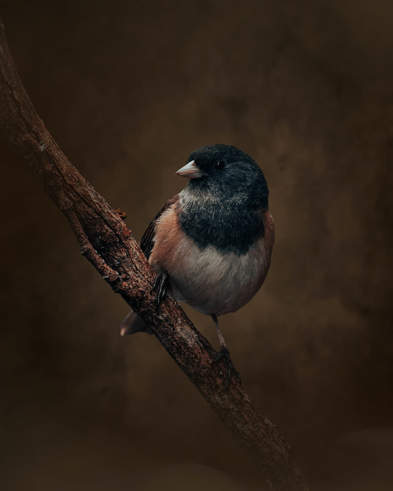
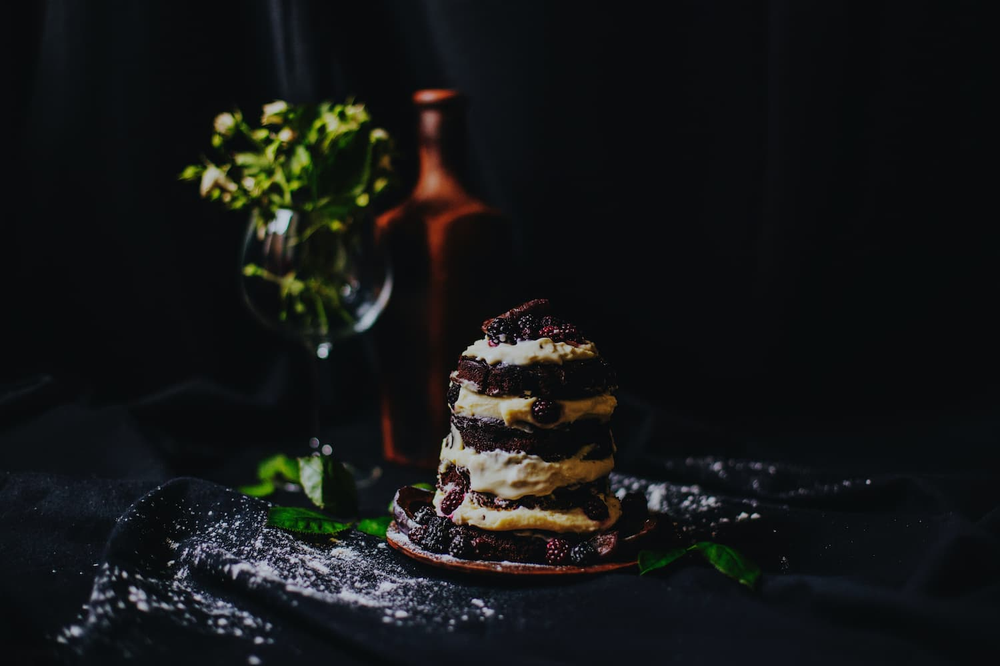

Hypnotherapy for motivation getting the drive back



Put wings on your dreams
When striving towards a goal, you must focus on what you want to obtain and avoid the impulse to go back to what you know and to what is comfortable.
Fire up your motivation
When striving towards a goal, you must focus on what you want to obtain and avoid the impulse to go back to what you know and to what is comfortable.